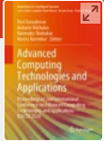

PhD – Universiti Malaysia Terengganu, 2022 (In Ontological Modelling and Expert Systems)
M.Phil. – University of Colombo, School of Computing, 2018 (Semantic Web and Computational Process Enforcement)
MSc in IT – University of Colombo, School of Computing, 2012 (General IT and Management)
BSc In Information Systems, National University of Ireland – 2nd Class Upper, 2010
Professional Graduate Diploma (PGD) in Software Engineering, Charted Institute for IT, UK, 2008
Publications
Books
Vidanage, K. (2023). A Framework of Collaborative Consensus Enforcement for Ontology Construction. Universiti Malaysia Terengganu. National Library of Malaysia, MALRep
Book Chapters

Vidanage, K., Noor, N.M.M., Mohemad, R., Bakar, Z.A. (2020). Semantic Web-Based Knowledge Extraction: Upper Ontology Guided Crime Knowledge Discovery. In: Vasudevan, H., Michalas, A., Shekokar, N., Narvekar, M. (eds) Advanced Computing Technologies and Applications. Algorithms for Intelligent Systems. Springer, Singapore. https://doi.org/10.1007/978-981-15-3242-9_30.
Online ISBN 978-981-15-3242-9
Journal Publications [Scopus / Web of Science Indexed / Indexed]:
Vidanage, K., Noor, N.M., Mohemad, R., & Bakar, Z.A. (2022). Collaborative Ontology Construction Framework: An Attempt to Rationalize Effective Knowledge Dissemination. International Journal of Advanced Computer Science and Applications.
Vidanage, K., Noor, N. M. M., Mohemad, R., & Bakar, Z. A. (2021). Verifying Ontology Increments through Domain and Schema Independent Verbalization. International Journal of Computer Science and Network Security, 21(1), 34–39 https://doi.org/10.22937/IJCSNS.2021.21.1.6
Vidanage, K., Mohamad Noor, N.M., Mohemad, R., & Abu Bakar, Z. (2022). Ontology specific visual canvas generation to facilitate sense-making-an algorithmic approach. International Journal of Electrical and Computer Engineering (IJECE).
Kaneeka Vidanage, Noor Maizura Mohamad Noor, Rosmayati Mohemad and Zuriana Abu Bakar, “Arbitrary Verification of Ontology Increments using Natural Language” International Journal of Advanced Computer Science and Applications(IJACSA), 12(7), 2021. http://dx.doi.org/10.14569/IJACSA.2021.0120742
Vidanage, K., Noor, N.M., Mohemad, R., & Bakar, Z.A. (2021). Visualisation for ontology sense-making: A tree-map based algorithmic approach. Computer Science and Information Technologies
Kaneeka Vidanage, Noor Maizura Mohamad Noor, Rosmayati Mohemad and Zuriana Abu Bakar, “Domain and Schema Independent Semantic Model Verbalization: A Conceptual Overview” International Journal of Advanced Computer Science and Applications(IJACSA), 10(5), 2019. http://dx.doi.org/10.14569/IJACSA.2019.0100527
Weerathunga, H., & Vidanage, K. (2022). Remote Reading of Surgical Monitor`s Physiological Readings: An Image Processing Approach. International Journal of Computer Science and Network Security, 22(7), 308–314. https://doi.org/10.22937/IJCSNS.2022.22.7.37
Kaneeka Vidanage, Rosmayati Mohemad, Noor Maizura Mohamad Noor and Zuriana Abu Bakar, “Fully Automated Ontology Increment`s user Guide Generation” International Journal of Advanced Computer Science and Applications(IJACSA), 12(6), 2021. http://dx.doi.org/10.14569/IJACSA.2021.0120624
Vidanage, K., Noor, N. M. M., Mohemad, R. and Bakar, Z. A. (2020). Domain and Schema Independent Question – Answering on Linked Data (QALD): First Order Logic-Based (FOL), Non – SPARQL Knowledge Discovery on Lexical Ontologies. International Journal on Emerging Technologies, 11(4): 474–485.
Kaneeka Vidanage, Noor Maizura Mohamad Noor, Rosmayati Mohemad, Zuriana Abu Bakar. (2020). Applied Ontology Construction Framework: A methodical approach to enforce collaborative consensus whilst preserving transparency and traceability. International Journal of Modern Agriculture, 9(3), 1893 – 1919.
Retrieved from https://www.modern-journals.com/index.php/ijma/article/view/376
Vidanage, K., Jayaratne, L. Machine Learning and Natural Language Processing Usage for Psychological Consultation. GSTF J Comput 4, 17 (2015). https://doi.org/10.7603/s40601-014-0017-5
Conference Publications:
W. A. R. Harshani and K. Vidanage, “Image processing based severity and cost prediction of damages in the vehicle body: A computational intelligence approach,” 2017 National Information Technology Conference (NITC), Colombo, Sri Lanka, 2017, pp. 18-21, doi: 10.1109/NITC.2017.8285649.
Narawita, C. R.,Vidanage, K. (2017). UML generator – use case and class diagram generation from text requirements. International Journal on Advances in ICT for Emerging Regions (icter), 10(1), 1-10.DOI: https://doi.org/10.4038/icter.v10i1.7182
L. Gunasekara and K. Vidanage, “UniOntBot: Semantic Natural Language Generation based API approach for Chatbot Communication,” 2019 National Information Technology Conference (NITC), Colombo, Sri Lanka, 2019, pp. 1-8, doi: 10.1109/NITC48475.2019.9114440.
C. R. Narawita and K. Vidanage, “UML generator – an automated system for model driven development,” 2016 Sixteenth International Conference on Advances in ICT for Emerging Regions (ICTer), Negombo, Sri Lanka, 2016, pp. 250-256, doi: 10.1109/ICTER.2016.7829928.
K. Kumaresan and K. Vidanage, “HateSense: Tackling Ambiguity in Hate Speech Detection,” 2019 National Information Technology Conference (NITC), Colombo, Sri Lanka, 2019, pp. 20-26, doi: 10.1109/NITC48475.2019.9114528.
N. L. Liyanage and K. Vidanage, “Site-ability: A website usability measurement tool,” 2016 Sixteenth International Conference on Advances in ICT for Emerging Regions (ICTer), Negombo, Sri Lanka, 2016, pp. 257-265, doi: 10.1109/ICTER.2016.7829929.
A. Ifthikar and K. Vidanage, “Valuation of Used Vehicles: A Computational Intelligence Approach,” 2018 8th International Conference on Intelligent Systems, Modelling and Simulation (ISMS), Kuala Lumpur, Malaysia, 2018, pp. 7-10, doi: 10.1109/ISMS.2018.00011.
D. Wijesinghe and K. Vidanage, “Review On Approaches for Theme Extraction and Sentence Ordering For Prioritization Of Journalistic Notes,” 2020 International Conference on Image Processing and Robotics (ICIP), Negombo, Sri Lanka, 2020, pp. 1-6, doi: 10.1109/ICIP48927.2020.9367344.
Vidanage, K. and De Silva, O. 2016. An Application of Context Assured Ontology for Rule Based Cluster Selection in Psychotherapy. Kelaniya International Conference on Advances in Computing and Technology (KICACT – 2016), Faculty of Computing and Technology, University of Kelaniya, Sri Lanka. p 72-73.
Vidanage, K. I., & Jayaweera, P. M. Aligning Business Inspirations with Business Processes: A Computational Approach.
Reserch Interests
Ontological Modelling
Computerized Process Enforcement
Computer Vision
Chatbots
Deep Learning
Goal Modelling
Semantic Web
Expert Systems
Teaching Interests
Semantic Web
Ontological Modelling
Machine Learning
Deep Learning
Agent Systems
Nature Inspired Computing
Artificial Intelligence
Databases
E-Commerce
Research Methods
Requirement Engineering
Professional Issues in ICT
Programming
Object Orientation
Achievements
Copy Right Protection for the Doctoral Research work has been granted from The Intellectual Property Corporation of Malaysia, Ministry of Domestic Trade, Co-operatives and Consumerism, Malaysia
IP Number: – LY2021E02179
Sustainable Catalyst Innovation Competition [ MINGGU PENYELIDIKAN DAN INOVASI – 2021]– Silver Award
IGOT Award for timely PhD research completion
3MT Semi-finalist for the M.Phil. Research, 2018 – National Science Foundation
Award winning Postgraduate Project Supervisions
“SuiciPredictor” – Machine Learning based Human Suicidal Behaviour Predicter – Best Postgraduate Research, MSc in Advanced Software Engineering, University of Westminster, UK [2017].
Thunder – NBQSA, Bronze Award, MSc in Advanced Software Engineering, University of Westminster, UK [2019].
Memberships
BCS Membership
Industrial Experience
Head of Research, OREL Co-operation [2022-2023]
Research Assistant, UMT, Malaysia [2020-2022]
Senior Lecturer, IIT [2014 – 2020]
Lecturer, Charted Accountants of Sri Lanka [ 2012 – 2014]
Software Engineer, Virtusa [2010-2012]
Visiting Lecturer – University of Moratuwa, Institute of Technology
Visiting Lecturer – University of Kelaniya
Other
Reviewer International journals / conferences,
– Smart Computing and Systems Engineering, University of Kelaniya, 2023
– ICTer, University of Colombo, 2018
Technical Panellist,
- International Conference on Innovation & Emerging Technologies, 2022, USJP
Technical Trainer / Consultant,
– Camoplast Solideal , Unilink International – Knowledge Engineering
– National Institute of Plantation Management – IT Strategy & Training.